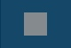

If you are recording a large area or the entire screen, the recording toolbar minimizes to the menu bar.
Option
User action or keyboard shortcut
Start the recording
Click the Record button to start recording.
Record button or press Option-Shift-Command-S
Restart the recording
Did you make a mistake and want to start over? Click the Restart button to delete the current recording and start over using the same recording settings.
Restart button
Pause the recording
Do you need to collect your thoughts or did an interruption occur? Click the Pause button to take a break. Click the Resume button to continue the recording.
Pause button or press Option-Shift-Command-S
Stop the recording
Are you done recording and ready to preview your video? Click the Stop button to end the recording.

Stop button or press Shift-Control-V
After recording, the video opens in Snagit Editor where you can preview, cut out mistakes or unwanted sections, or share the video capture.
 Start and stop a video capture
Start and stop a video capture